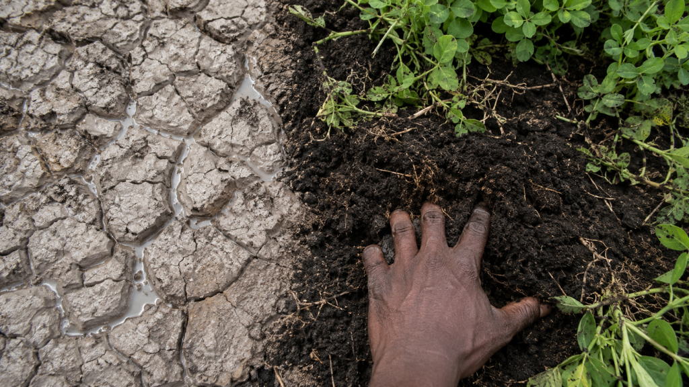

Your farm is not failing. You might just exhausting it.

Adamu has been farming the same plot in Kaduna State for eleven years. Every season he tills deeply, applies more fertiliser than the season before, plants his maize, and waits. And every season the yields come back slightly lower. Nigerian farmers lose an estimated 3.5 billion tonnes of topsoil to erosion every year. Most of them, like Adamu, are standing on the evidence of that loss and blaming the rain.
The ground has been talking. Degraded soil whispers through a hard grey crust that forms after rain instead of soaking it in. Through pale, stunted crops surrounded by healthier ones. Through water that pools on the surface rather than disappearing into the earth. These are not random problems. They are signals. And learning how to read them establishes the path back becomes considerably clearer.
Step 1: Consider Low or No Tilling Practice
Every time you till deeply, you are resetting the soil to zero. Deep tillage destroys the fungal networks that took years to build, exposes stored carbon, and breaks the soil structure that holds water in place. The soil arrives at the next planting weaker than it left the last one. Then you add more fertiliser to compensate. Then you till again. As much as the cycle looks more like farming, it is actually slow demolition of the soil minerals and productive strength overtime.
Switching to low-till or no-till is the single most impactful first step. Within three seasons, water infiltration measurably improves. Within five, organic matter begins recovering. The tractor is not the enemy. The overuse of it is.
Step 2: Protect the Soil with Cover Crops
Left exposed between seasons, the harmattan bakes it into a crust, the wind strips its most nutrient-rich particles, and the first heavy rains compact it into a surface that sheds water rather than absorbing it. What looks like an empty field waiting for planting is a slow erosion event happening in plain sight.
Cover cropping fixes this. Plant legumes or grasses after the main crop harvest. They protect the topsoil, fix nitrogen directly into the ground, and feed the soil biology through the dry season. Farmers who adopt cover cropping consistently report fertiliser cost reductions of up to 30 percent within two to three seasons, which is a good money back in the pocket strategy for a smart farmer like yourself.
Step 3: Read the Field Before You Feed It
Before reaching for the fertiliser bag, run two tests that cost nothing. Dig a 30 centimetre square hole to spade depth and count the earthworms. Fewer than three means severely degraded biological activity. Then pour one litre of water onto bare soil and time it. Longer than ten seconds means compaction that fertiliser will not fix but reduced tillage will. These two tests tell you more than most expensive lab reports and take less than five minutes to run.
Summary
You did not lose your soil in one season. You will not fix it in one season either. But three seasons of reduced tillage, two of cover cropping, and one simple field test before every fertiliser application changes the trajectory permanently.